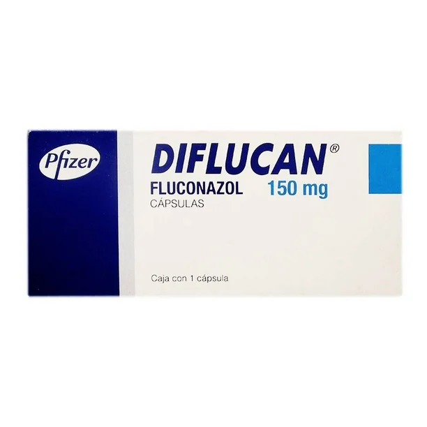
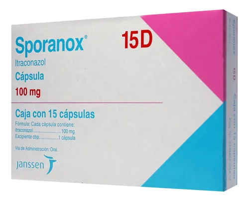
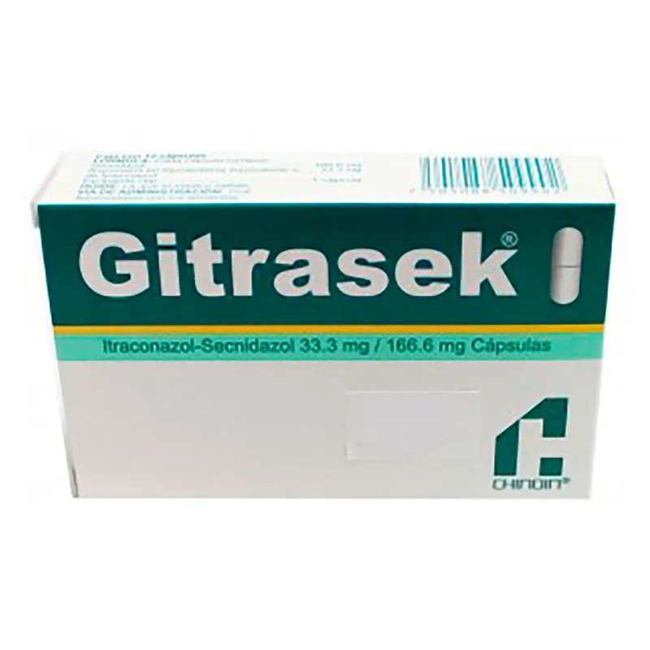

Ambos inhiben la enzima lanosterol 14α-desmetilasa fúngica, impidiendo la síntesis de ergosterol, componente vital de la membrana celular de los hongos. Esto genera alteración de la permeabilidad celular y muerte fúngica.
Son inhibidores del CYP3A4 (más potente en itraconazol)- Pueden aumentar niveles de: warfarina, ciclosporina, fenitoína, midazolam, estatinas- Antiácidos reducen absorción de itraconazol- Fluconazol tiene menos interacciones que itraconazol